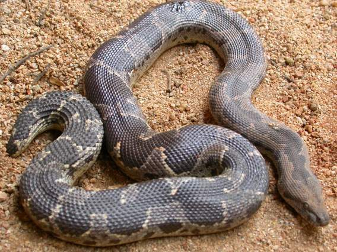

डोमेन साँपCommon Sand Boa
Eryx conicus · Boidae · REP-0017

- Scientific name
- Eryx conicus (Schneider, 1801)
- Family
- Boidae
- Hindi
- डोमेन साँप
- Status here
- native
- IUCN
- LC
When to look कब देखें
Present all year.
डोमेन साँप / Common Sand Boa
Eryx conicus (Schneider, 1801) — Boidae
डोमेन साँप (दो-मुँहा साँप / रफ-स्केल्ड सैंड बोआ / रेतीला अजगर) — पूर्वी उत्तर प्रदेश के रेतीले नदी किनारों (Ghaghra riverbanks), सूखे रेतीले खेतों, और झाड़ीदार बंजर जमीनों में पाया जाने वाला एक छोटा, भारी शरीर वाला और पूर्णतः बिना जहर का साँप (non-venomous constrictor snake) है। इसकी लंबाई लगभग 50 से 75 सेमी होती है। इसकी सबसे बड़ी पहचान इसकी छोटी, कुंद (blunt) पूंछ है, जो दिखने में बिल्कुल इसके सिर जैसी लगती है। इस पूंछ की बनावट के कारण ग्रामीणों में इसे 'दो-मुँहा साँप' (two-headed snake) समझने का भ्रम होता है। डोमेन साँप का शरीर हल्के पीले-गुलाबी या भूरे रंग का होता है जिस पर गहरे भूरे रंग के अनियमित धब्बे बने होते हैं। यह मिट्टी या रेत में खुद को आधा गाड़कर (half-buried) छिपा रहता है और छोटे चूहों व छिपकलियों का शिकार उन्हें अपनी कुंडली में दबाकर (constrictor) करता है। यह साँप पूरी तरह विष-रहित है और इंसानों को कोई नुकसान नहीं पहुँचा सकता। वन्यजीव संरक्षण अधिनियम (WPA) की अनुसूची IV के तहत इसे कानूनी सुरक्षा प्राप्त है।
Non-Venomous Status and Conservation Warning गैर-विषैला होने की पुष्टि और चेतावनी
[!WARNING]
डोमेन साँप (सैंड बोआ) पूरी तरह से बिना जहर का होता है। इसके काटने से मानव शरीर में कोई जहर नहीं फैलता है। हालांकि, अपने चित्तीदार शरीर के कारण इसे ग्रामीण अक्सर अत्यधिक जहरीले रसेल वाइपर (Russell's Viper, REP-0010) के रूप में गलत पहचान लेते हैं और डर के मारे इसे मार डालते हैं। इसकी पूंछ के दो-मुँहा होने की अंधविश्वासपूर्ण कहानियों (जैसे कि यह छह महीने सिर की तरफ से और छह महीने पूंछ की तरफ से चलता है) के कारण भी इसे नुकसान पहुँचाया जाता है।
इसके अलावा, सैंड बोआ की गुप्त रूप से तांत्रिक अनुष्ठानों और अंतरराष्ट्रीय अवैध पालतू जानवरों के व्यापार (exotic pet trade) के लिए भारी तस्करी की जाती है। वन्यजीव (संरक्षण) अधिनियम के तहत इसे पकड़ना या बेचना एक दंडनीय अपराध है। इस निरीह और शांत जीव को मारना पूरी तरह गैर-कानूनी है; यह खेतों में चूहों को खाकर किसानों की फसल की रक्षा करता है।
Quick Identification त्वरित पहचान
| Feature | Description |
|---|---|
| Size & Build | Small (50–75 cm), very stout, round and heavy-bodied, looking thick like a sausage |
| Tail | Very short, flat, blunt tail (3.5–5.0 cm) that closely mimics the round shape of its head |
| Color & Pattern | Grey-brown or pinkish-brown body, marked with a dark brown, zig-zag, irregular central chain pattern |
| Scales | Small, smooth on the head and front body, but becoming highly rough and heavily keeled towards the tail |
| Head | Small, flat, wedge-shaped head, not distinct from the neck, with tiny vertical-pupil eyes positioned high |
Field tip: Look in sandy soil beds or ploughed peanut fields near the river. Search for a short, thick, patterned snake that tries to bury itself backward into the sand when uncovered. Look at the tail; it is very blunt and rounded, looking like a second head, with rough dry scales. It lacks any leaf-like ring patterns on its body.
Morphology आकारिकी
Biometrics (typical measurements of mature adults in the northern Indian plains):
| Measurement | Range |
|---|---|
| Total length | 50.0–75.0 cm |
| Body thickness | 3.5–5.5 cm |
| Weight | 300–600 g |
| Mid-body scale rows | 40–50 rows |
| Ventral scales | 160–180 |
| Tail length | 3.5–5.0 cm |
Head and Snout: The head is covered in tiny scales (no large shields). The snout is pointed and wedge-like, adapted for pushing through loose sand (fossorial adaptation).
Body Scales: Scales are heavily keeled (rough with center ridges) on the tail, which is used to anchor the body while digging or holding prey.
Eyes: Extremely small, with vertical pupils, situated near the top of the head so the snake can see while buried in sand.
Behaviour & Ecology व्यवहार और पारिस्थितिकी
Sub-surface Lifestyle: Spend most of the day buried just below the sand surface with only its eyes and nostrils exposed, waiting to strike passing prey (ambush predator).
Tail Mimicry Defense: When threatened, it hides its head underneath its coiled body and raises its blunt tail, moving it slowly to mimic a striking head, tricking predators into attacking the less-vulnerable tail.
Diet: Non-venomous constrictor, eating mice, shrews, geckos, and ground-nesting baby birds.
Associated Species / Interactions संबंधित प्रजातियाँ
- Farmer's Ally: Feeds extensively on agricultural rodent pests like the लघु बैंडिकूट चूहा (Lesser Bandicoot Rat), keeping crop damage low.
- Predators: Small juveniles are preyed upon by monitor lizards, eagles, and jackals.
Conservation Status संरक्षण स्थिति
Protected under Schedule IV of the Wildlife Protection Act, 1972. Listed as Least Concern (LC) globally, but threatened locally by habitat conversion of sandy riverbanks and illegal poaching for trade.
Expected Locally स्थानीय रूप से अपेक्षित
Not a field record. Written from published accounts for eastern Uttar Pradesh. No confirmed local sighting yet — if you have seen it, that is what the atlas needs.
अभी तक स्थानीय पुष्टि नहीं। यह विवरण प्रकाशित स्रोतों से है, किसी अवलोकन से नहीं।
A common resident snake in the sandy tracts along the Ghaghra river floodplain in the Basti district, regularly observed in the Vikramjot and Harraiya blocks. Local farmers are familiar with the "Domein" or "Do-munha" snake, frequently turning them up during soil ploughing. Conservation campaigns have helped reduce mortality by explaining their non-venomous status to villagers.
Distribution वितरण
Global range: Native to South Asia, found across India, Pakistan, Nepal, and Sri Lanka.
In India: Distributed widely in all dry sandy plains and river basins of northern, central, and western states.
In Uttar Pradesh: Abundant along all major sandy river basins (Ganges, Yamuna, Saryu/Ghaghra).
In Basti district / eastern UP: Common near river channels.
Research Questions शोध प्रश्न
Anyone can investigate these | कोई भी इन प्रश्नों की जाँच कर सकता है
- How many seconds does a Common Sand Boa take to bury itself completely in dry loose sand compared to wet soil? — Record burying speeds in different substrates.
- Does the Sand Boa show a preference for eating field mice over wall geckos in captivity observations? — Document prey selection.
- What is the number of Sand Boas rescued near riverbeds during the dry summer months compared to monsoon floods? — Analyze seasonal rescue data.
- How does the blunt tail mimicry change in speed when the temperature rises from 20°C in winter to 35°C in summer? — Track defensive behavior speeds.
- Does the count of crop-destroying rodents decrease in fields where Sand Boas are actively sighted in Basti? / क्या बस्ती के उन खेतों में फसलों को नुकसान पहुँचाने वाले चूहों की संख्या कम हो जाती है जहाँ डोमेन साँप सक्रिय रूप से देखे जाते हैं? — Compare crop damage in sighting zones.
Similar Species मिलती-जुलती प्रजातियाँ
| Species | How to tell apart | comparison |
|---|---|---|
| Russell's Viper (Daria russelii) | Highly venomous; scales are strongly keeled over the whole body; has three rows of clean leaf-like rings; makes a loud hissing sound | रसेल वाइपर — अत्यंत जहरीला, गोल धब्बे, तीखा फुफकार |
| Red Sand Boa (Eryx johnii) | Larger (75–100 cm); uniform reddish-brown or blackish color without blotches; tail is completely rounded like a peg | दुमुँहा लाल साँप — बिना धब्बों का कत्थई रंग |
| Indian Python (Python molurus) | Much larger (3–4.5 m); has a distinct arrowhead mark on head; scales are completely smooth | अजगर — विशाल आकार, सिर पर तीर का निशान |
Field rule: Small, very stout snake (50–75 cm) with irregular dark brown blotches on a tan body, a wedge-shaped digging head, and a short blunt tail mimicking the head, is the Common Sand Boa (Domein).
Taxonomy & Classification वर्गीकरण
Original description. Johann Gottlob Schneider described the Common Sand Boa as Boa conica in 1801 in his Historiae Amphibiorum Naturalis et Literariae (Vol. 2, p. 242). It was later transferred to the genus Eryx. The genus name Eryx is named after a figure in Greek mythology. The specific name conicus is Latin for conical, referencing the shape of the tail.
Subspecies. Monotypic — no subspecies are currently recognised in the main index.
Family and order placement. Placed in the order Squamata, family Boidae (boa family), subfamily Erycinae, genus Eryx.
Phylogenetic notes. Eryx conicus represents an ancient branch of fossorial (burrowing) boid snakes that have evolved compact skulls, reduced eyes, and short tails to adapt to a life underground in sandy plains, representing a separate evolutionary branch from arboreal pythons.
IUCN status rationale. Assessed as Least Concern (LC) by the IUCN Red List. It is widespread and common, though local populations are declining due to illegal capture and habitat loss.
Photo Gallery फोटो गैलरी
References संदर्भ
- Schneider, J. G. (1801). Historiae Amphibiorum. Jena, Vol. 2, p. 242. [original description as Boa conica]
- Smith, M. A. (1943). The Fauna of British India, Ceylon and Burma, including the whole of the Indo-Chinese Sub-region. Reptilia and Amphibia. Vol. III (Serpentes). Taylor & Francis, London.
- Whitaker, R. & Captain, A. (2004). Snakes of India: The Field Guide. Draco Books, Chennai.
- Tokar, A. A. (1989). The Systematics of the genus Eryx (Serpentes, Boidae). RIO AN (covers Sand Boa group evolution).
- World Flora Online / Reptile Database (2024). Eryx conicus taxon details.
- GBIF Occurrence Data — Eryx conicus, India (2010–2025).
Source file: species/fauna/reptiles/common_sand_boa.md